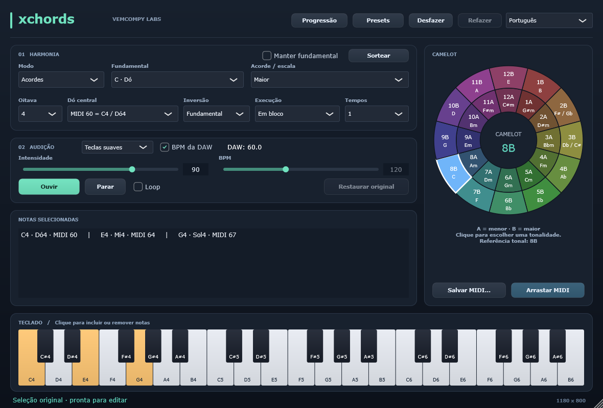
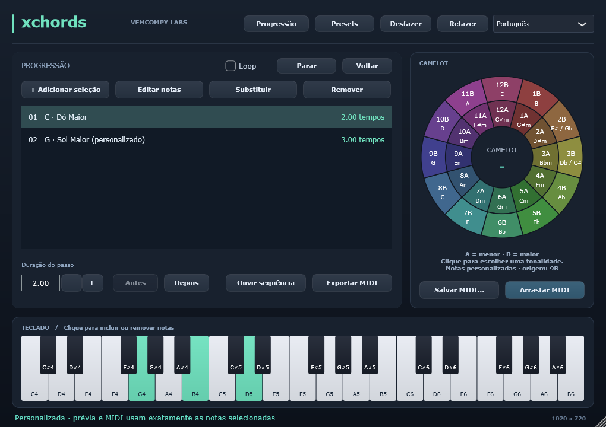

A harmonia à vista.
15 fórmulas de acordes, 14 escalas e uma roda Camelot clicável. Notas em letras e solfejo, com equivalências e oitavas.
HARMONY EXPLORER / WINDOWS x64
Encontre o acorde. Explore a escala. Construa a progressão.
O Xchords transforma suas escolhas em MIDI, no seu ritmo.

MENOS CLIQUES, MAIS MÚSICA
15 fórmulas de acordes, 14 escalas e uma roda Camelot clicável. Notas em letras e solfejo, com equivalências e oitavas.
Ative e desative notas no teclado. Escute com três timbres, use o loop e acompanhe o BPM da sua DAW.
Organize progressões, defina a duração de cada passo e exporte tudo em MIDI. Salve suas descobertas em presets e favoritos.
CONSTRUA SEU CAMINHO
Adicione acordes, mude a ordem, ajuste as notas e compare ouvindo. Desfazer e refazer deixam a experimentação fluir.
Começar a explorar ↗
SEU PRÓXIMO ACORDE ESTÁ AQUI
Builds para Windows x64. Os links acompanham a última compilação aprovada da main.
Build de desenvolvimento · consulte a data e o commit na release.
Explore a harmonia junto da sua sessão. Exporte ou arraste o MIDI para uma pista.
Baixar VST3 ↓ZIP · Windows x64 · host compatível com VST3Abra, escolha suas notas e escute. Um espaço independente para testar suas ideias.
Baixar standalone ↓ZIP · Windows x64 · aplicativo portátilPRONTO PARA TOCAR
C:\Program Files\Common Files\VST3. O Windows pode solicitar permissão de administrador.A versão atual gera arquivos MIDI. Ela não modifica clips existentes nem envia MIDI em tempo real para outros instrumentos.
Se o Windows informar que falta VCRUNTIME140 ou MSVCP140, instale o Microsoft Visual C++ Redistributable x64 ↗ e abra novamente o aplicativo ou a DAW.